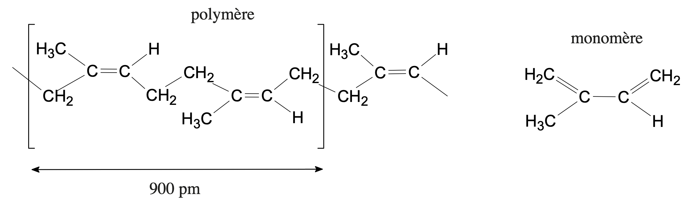
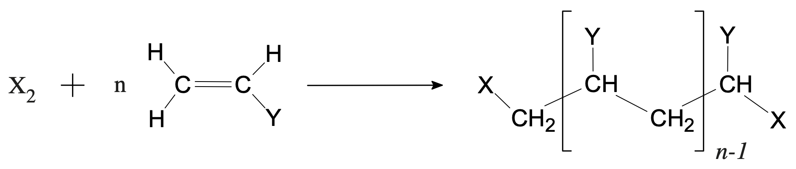
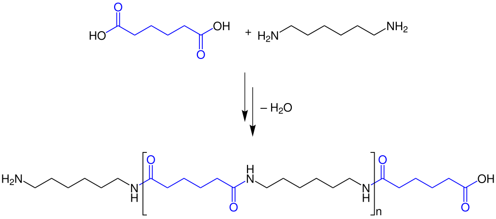
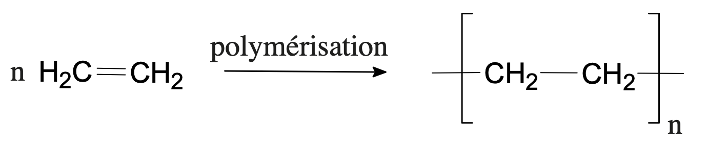
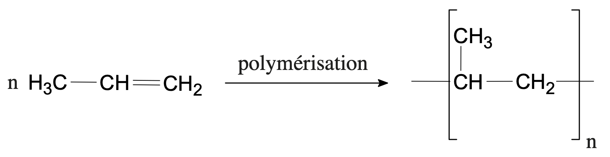
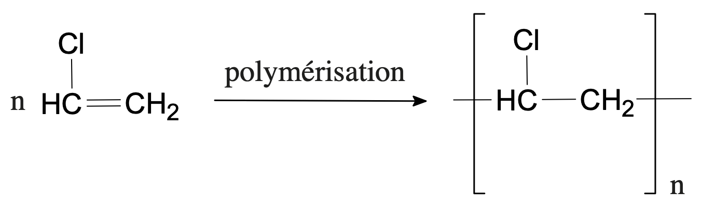

Définitions
Le nombre $n$ de monomères que comporte le polymère est son degré de polymérisation. Il est très variable. Pour $n=2$, le polymère est un digère ; pour $n=3$, un trimère, etc. Pour de grandes valeurs de $n$, supérieures à la centaine, on a affaire à une macromolécule.

Le caoutchouc naturel est un polymère du 2-méthylbuta-1,3-diène.
On trouve dans la nature de nombreuses macromolécules que l’homme utilise : cellulose, soie, caoutchouc, etc. Les chimistes ont donc essayé de fabriquer des macromolécules pouvant se substituer aux polymères naturels et présentant même des propriétés plus intéressantes que les leurs. Il existe deux grands types de réactions permettant d’obtenir des polymères : les réactions de condensation et les réactions d’addition.
Polymères vinyliques
Soit $\ce{CH2=CH-Y}$ un dérivé de l’éthylène (éthène). Par polymérisation, c’est-à-dire par addition répétée sur lui-même, on peut obtenir une chaîne formée par la juxtaposition d’un grand nombre de maillons $\ce{-CH2-CHY -}$. Les dérivés de l’éthylène apparaissent donc comme les monomères de polymères appelés vinyliques, car le groupement $\ce{CH2=CH -}$ est dénommé groupement vinyle. Le schéma de polymérisation d’un tel composé est :
Remarque : $\ce{Y}$ désigne un groupement monovalent.
Le réactif $\ce{X2}$, qui a pour rôle d’initier la réaction, se retrouve aux deux extrémités de la chaîne. Sa nature n’est pas très importante lorsque $n$ est grand (plusieurs milliers). Les propriétés du polymère ne dépendent alors pratiquement pas de ces groupes terminaux.
Les polymères vinyliques sont qualifiés de polymères linéaires. Ils sont en effet constitués de longues chaînes, peu ramifiées et indépendantes les unes des autres. Nous rencontrerons d’autres types de polymères, que nous appellerons réticulés, constitués par des chaînes reliées les unes aux autres pour former une seule macromolécule tridimensionnelle.
Lorsqu’on chauffe un polymère vinylique, les différentes chaînes peuvent glisser les unes par rapport aux autres, d’abord très faiblement, puis de plus en plus facilement : le polymère devient plastique, c’est à dire liquide mais très visqueux. Les polymères vinyliques sont appelés thermoplastiques, car ils se ramollissent par élévation de température. Cette propriété permet de les « mettre en forme » en les moulant ou en les étirant.
Remarque : Pour un initiateur et un monomère vinylique donnés, dans des conditions expérimentales fixées (pression, température, solvant), le degré de polymérisation est variable. Les valeurs de $n$ sont dispersées autour d’une valeur moyenne la plus probable. C’est à partir de cette valeur moyenne que l’on définit la masse molaire moyenne du polymère. De cette masse molaire moyenne dépendent les propriétés macroscopiques du polymère : température de fusion, propriétés mécaniques, etc., et donc ses possibilités d’utilisation. Nous verrons plus tard que la dispersion du degré de polymérisation autour d’une valeur moyenne est la conséquence du mécanisme de la réaction : l’addition d’une molécule sur une autre se fait au hasard.
Quelques exemples de polymères
Polyéthylène
Le monomère est l’éthylène (éthène) dont l’industrie pétrolière fournit de grandes quantités par craquage à la vapeur des fuels lourds. La polymérisation a lieu vers 100 °C, mais, selon la pression utilisée, on obtient des polymères de propriétés légèrement différentes :
-
Sous des pressions peu élevées (quelques dizaines de bars), on obtient du polyéthylène « haute densité ». Sa masse molaire moyenne est de $\pu{30000 g.mol-1}$, ce qui correspond à plus de 20 000 chaînons $\ce{-CH2}$ ! À la température ordinaire, c’est un solide blanchâtre qui fond à 129 °C. Cette température de fusion assez élevée, ainsi que les bonnes propriétés mécaniques, sont dues à l’existence, au sein du solide, de zones où les chaînes sont arrangées régulièrement. Facile à mouler, résistant bien à l’eau et à de nombreux produits chimiques, le polyéthylène est très utilisé : des emballages rigides, du matériel de laboratoire, des jouets sont fabriqués en polyéthylène « haute densité ».
Les chaînes non ramifiées de polyéthylène peuvent s’arranger régulièrement pour donner des cristallites.
-
Si la pression de polymérisation est plus élevée ($\pu{2000 bar}$), la réaction de polymérisation est un peu plus complexe et donne naissance à des chaînes ramifiées. Il est plus difficile de ranger régulièrement des chaînes ramifiées que des chaînes non ramifiées : le polymère obtenu est donc moins dense. C’est du polyéthylène « basse densité » ($\pu{0,92 kg.dm-3}$). À la température ordinaire, il est plus souple que le polyéthylène « haute densité », et il est surtout utilisé pour fabriquer des emballages souples (sacs, feuilles, etc.).
Ce plastique représente un enjeu majeur de gestion des déchets non seulement en raison de son abondance mais aussi parce qu’il est considéré comme très stable et quasiment non-biodégradable, il tend donc à s’accumuler dans l’environnement. Il est cependant possible, en laboratoire, de partiellement biodégrader le PE par l’intermédiaire de bactéries présentes dans l’intestin de la larve d’une mite alimentaire.
Le polypropylène
Le monomère est le propylène (propène), lui aussi produit par craquage des pétroles. Les caractéristiques du polymère sont voisines de celles du polyéthylène, son utilisation aussi.
On trouve de nombreuses pièces moulées en polypropylène pour la construction automobile, notamment les pare-chocs, les tableaux de bord, l’habillage de l’habitacle et les réservoirs d’essence et de liquide de frein. Le polypropylène est souvent utilisé pour les emballages alimentaires pour sa résistance à la graisse (emballages de beurre par exemple) et son aspect brillant. Il est également utilisé pour la fabrication de tissus d’ameublement, de vêtements professionnels jetables (combinaisons de peinture, charlottes, masques chirurgicaux, etc.), de sacs tissés à haute résistance, de géotextiles et de géomembranes ; on le trouve aussi sous forme de fibres dans les cordages et les tapis synthétiques. Des pailles à boire sont également fabriquées en polypropylène.
Le polypropylène de grade « injection » est très facilement recyclable. Le polypropylène de grade « film » est au contraire beaucoup plus délicat à recycler.
Le polychlorure de vinyle
Le monomère est le chlorure de vinyle (chloroéthène). On peut l’obtenir de plusieurs façons. Par exemple,
- Par addition du chlorure d’hydrogène sur l’acétylène (éthyne). La réaction est catalysée par du chlorure de mercure sur charbon actif.
- Par addition de dichlore sur l’éthylène (éthène), suivie d’une élimination de chlorure d’hydrogène. La première étape se déroule à basse température dans un solvant liquide car elle est exothermique. La deuxième a lieu à température élevée car elle est endothermique. L’énergie thermique nécessaire à la deuxième étape peut être fournie par la première réaction.
Le chlorure de vinyle se polymérise facilement : la masse molaire du polymère peut atteindre $\pu{1e6 g.mol-1}$ !!! Le polymère obtenu (P.V.C.) est un matériau rigide de grande importance industrielle : tuyaux de canalisation, sols plastiques, film étirable pour emballage, etc.
La polymérisation du PVC est irréversible. Il est soupçonné de contribuer à la formation de pluies acides (lorsqu’on brûle du P.V.C. il se dégage du chlorure d’hydrogène), au rejet de dioxines et à la formation de cancers. Avant les années 2000, le P.V.C. était perçu comme un matériau non recyclable, destiné à finir en décharge ou à être incinéré. La recherche a cependant effectué de grands progrès et, depuis 2010, plusieurs centaine de milliers de tonnes de P.V.C. sont recyclées en Europe.
Le polytétrafluoroéthylène
Ce polymère est plus connu sous son nom commercial : le téflon. Le monomère $\ce{C2F4}$ est préparé par décomposition du difluorochlorométhane (fréon 22) à 250 °C. Il se forme aussi du chlorure d’hydrogène. Le polymère, formé de maillons $\ce{-CF2-}$ possède des propriétés remarquables dues à la très grande solidité de la liaison carbone-fluor. Il résiste à la plupart des produits chimiques, même les plus corrosifs, il est stable jusqu’à des températures supérieures à 300 °C. C’est donc un matériau très intéressant mais son prix de fabrication est assez élevé et on le réserver à des emplois particuliers, comme la fabrication de tuyaux et de joints pour les usines de l’industrie chimique ou celle de prothèses. Enfin, les surfaces de polytétrafluoroéthylène possèdent une très faible adhérence, ce qui les fait utiliser comme revêtements d’ustensiles de cuisine.
Exemple d’une polycondensation :
- Une réaction de condensation est une réaction chimique au cours de laquelle deux molécules, ou deux parties d’une même molécule, se combinent pour former une molécule (le condensat) en éliminant une molécule simple (le sous-produit), telle l’eau (le plus souvent), le sulfure d’hydrogène, le méthanol ou l’acide acétique.
- Dans le cas d’une polycondensation, les monomères initiaux ne sont pas identiques aux motifs de répétition du polymère final, à cause de la perte des petites molécules dans les étapes de condensation. Les molécules initiales réagissent pour donner de plus grosses molécules qui elles-mêmes pourront réagir et former des chaînes de plus en plus longues.
Exemple : Formation du nylon 6-6 par réaction entre l’acide hexanedioïque et l’hexaméthylènediamine, les deux groupes fonctionnels sont des groupes acide carboxylique et amine.

Exercices
- Le 1,2-dichloroéthane élimine par chauffage une molécule de chlorure d’hydrogène. Écrire l’équation de la réaction et nommer le produit supplémentaire.
Solution
L’élimination forme donc du chlorure d’hydrogène et du chloroéthène.- Écrire l’équation de la polymérisation du polyéthylène.
Solution
- Écrire l’équation de la polymérisation du polypropylène.
Solution
- Écrire l’équation de la fabrication du monomère du polychlorure de vinyle par addition du chlorure d’hydrogène sur l’acétylène.
Solution
- Écrire l’équation de la fabrication du monomère du polychlorure de vinyle par addition de dichlore sur l’éthylène, suivie d’une élimination de chlorure d’hydrogène.
Solution
- Écrire l’équation de la polymérisation du polychlorure de vinyle.
Solution
-
Donner la formule et le nom des produits obtenus au cours des réactions suivantes :
- propène + dichlore → …
- but-2-yne + eau → …
- but-2-ène + chlorure d’hydrogène → …
- 4-méthylpent-2-ène + dihydrogène → …
- éthylène + eau → …
Nommer les produits.